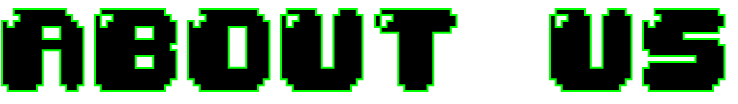
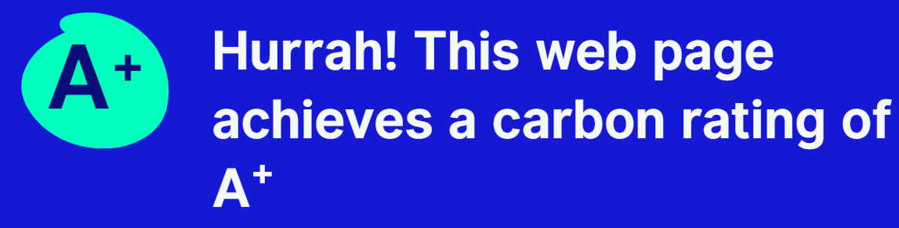

WELKOM BIJ PIXELATED PIXELS
Wij zijn een team van gameliefhebbers met nog een plekje in ons hart voor de klassieke retro spelletjes, zoals Pac-Man en Mario. We willen onze kennis over de geschiedenis van retro gaming delen met onze luisteraars. In elke aflevering zullen we het hebben over verschillende onderwerpen. Hoe is speedrunning ontstaan? Worden retro games nog gekocht? Zullen ze ooit weer de hype krijgen die ze vroeger hadden? Hoe is de wereld van gaming ontstaan en ontwikkeld? Wij doen hier onderzoek naar en zullen ook zeker de meningen van onze luisteraars delen. We zijn hier niet alleen voor de gaming veterans, maar ook voor degene die nieuw zijn in de gaming wereld en nieuwsgierig zijn naar de roots van de moderne gaming wereld. Of je hier nou bent om flashbacks te krijgen van je jeugd of voor het eerst over retro gaming hoort, Pixelated Pixels is de perfecte plek om terug in de tijd te gaan met nieuwe kennis.
Join us: insert your coin, press start en kom met ons mee op reis door de wereld van retro gaming.
Ook leuk om te weten! Onze website scoort A+ op www.websitecarbon.com. Dit houdt in dat onze website een lage CO2 uitstoot heeft.
